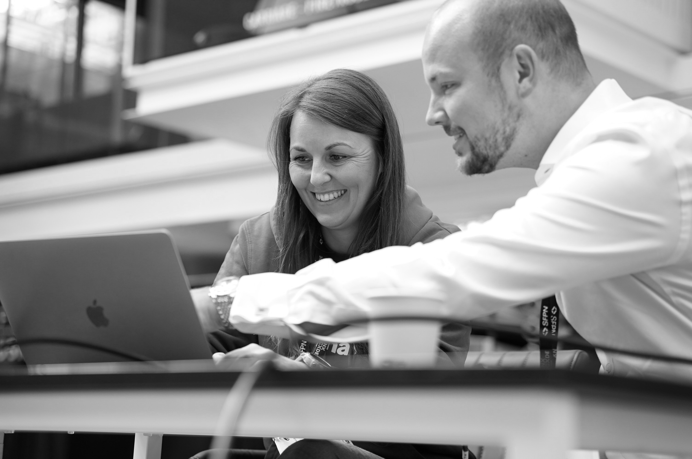
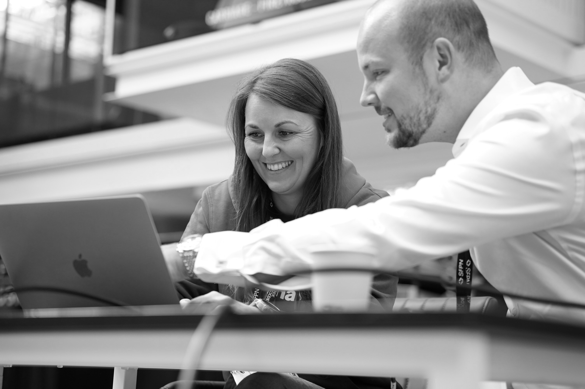

TimeTonic : l’avenir du NoCode et de l’IA au service des entreprises
TimeTonic, fondée par Jean-Michel Durocher, incarne une nouvelle génération de plateformes de gestion d’entreprise en NoCode et met la donnée au cœur des applications métier. Plutôt que de se focaliser sur une interface visuelle
(UI-first) ou sur des workflows automatisés (process-first), TimeTonic adopte une approche "Data-first" en permettant la création de bases de données intelligentes et visuelles, centralisant et connectant toutes les informations
et les outils des entreprises.
En intégrant l’IA de manière native avec des technologies avancées telles que OpenAI et MistralAI, TimeTonic permet aux utilisateurs d’exploiter des fonctionnalités d’automatisation, de génération de documents, et de messagerie
temps réel, offrant ainsi une plateforme complète pour la gestion et l’automatisation d’entreprise. Grâce à la RAG (Récupération Augmentée par Génération), l'IA interagit directement avec les données, rendant possible des analyses
d’images multi-champs et renforçant la sécurité de l’accès à l’information en fonction des profils utilisateurs et des droits d’accès.
Accessible en cloud et en mobile, TimeTonic supporte également le mode hors ligne, offrant une solution performante de bout en bout, où la donnée devient l’application elle-même. Cette approche révolutionne la manière dont les
entreprises créent, gèrent et exploitent leurs applications métiers, pour une transformation digitale sécurisée et conforme au RGPD.
Ontomantics : La nouvelle plateforme NoCode pour applications d'entreprise
Ontomantics se positionne comme une start-up innovante dans le domaine du NoCode, permettant aux entreprises de développer leurs applications métiers de manière rapide et sans compétences techniques. Cette plateforme facilite la
création et la gestion d’applications d'entreprise en intégrant des fonctionnalités avancées, dont un chatbot interactif.
Grâce à ce chatbot, les utilisateurs peuvent concevoir les différentes parties de leur application et programmer des tâches planifiées, simplifiant la personnalisation de leurs solutions en fonction de leurs besoins. Ontomantics
propose également une automatisation "end-to-end" du processus de développement des applications métier. Cela signifie que la plateforme couvre l’ensemble des étapes, de la conception initiale au déploiement final, en intégrant
automatiquement les processus, la logique métier et les données sans nécessiter de codage manuel.
En bref, Ontomantics aide les entreprises à accélérer leur transformation numérique en leur fournissant une solution NoCode complète, où le développement d’applications métiers devient à la fois accessible et efficace.
Pas de code et de numérique: pour mieux ou pire
La table ronde sur l’inclusion et la diversité dans le secteur technologique vise à montrer comment le NoCode, le LowCode et l’intelligence artificielle (IA) peuvent contribuer à une plus grande équité et à un accès élargi pour
les groupes sous-représentés. Cet événement, parrainé par LA FRENCH TECH GRAND PARIS et modéré par Alexandra André, invite des leaders influents comme Cristina Lunghi, directrice générale d’Arborus et pionnière en égalité de
genre, et Peggy Vicomte, déléguée générale de Femmes Numériques, à partager leurs idées et expériences.
Chaque intervenant analysera la manière dont ces technologies inclusives et accessibles transforment les pratiques numériques, permettant à tous de participer à l'innovation sans barrière technique. Cristina Lunghi, par exemple,
apportera un éclairage sur les progrès réalisés grâce à des initiatives telles que le label GEEIS pour l’égalité des genres et la diversité. Elle abordera également la Charte internationale pour une intelligence artificielle
inclusive, un cadre qui vise à auditer et certifier les entreprises pour leur impact en matière d’IA éthique et inclusive, certifié dans plus de 41 pays.
Cet événement mettra en lumière les efforts visant à garantir que le numérique et l’IA soient des leviers d’inclusion, non d'exclusion, dans l'industrie technologique.
NoCode Summit Paris : L'énergie créative qui donne envie de se lancer
Le NoCode Summit Paris, qui se déroule à Station F, est l’événement incontournable pour les professionnels et curieux du NoCode souhaitant explorer le potentiel de cette approche révolutionnaire pour la transformation numérique.
Au-delà d’une simple démonstration de l’efficacité du NoCode, ce sommet met en avant la manière dont les outils NoCode et LowCode permettent à chacun de créer, d’innover, et de construire un avenir numérique plus inclusif et
durable.
Sous le thème principal de Tech for Good et Cybersécurité, le sommet accueille un large éventail d’orateurs et de leaders de la communauté NoCode. Ces experts partagent leurs meilleures pratiques, leur vision de l’avenir, ainsi
que des retours d'expérience concrets et inspirants. Les sessions couvrent divers sujets d’importance tels que la transformation numérique, les Ressources Humaines et la formation, l’intelligence artificielle, les opérations,
la productivité, et l’innovation.
Le NoCode Summit permet non seulement de se former aux dernières tendances et technologies du NoCode, mais aussi de nouer des liens précieux avec des acteurs partageant des objectifs communs, ouvrant la voie à des partenariats,
des collaborations et de nouvelles opportunités. Pour les participants, c’est l’occasion de s’inspirer de cas d’usage réussis, de découvrir des solutions innovantes, et d'appliquer rapidement les enseignements à leurs projets,
en accédant aux meilleurs experts du secteur pour accélérer leur propre transformation numérique.
 
